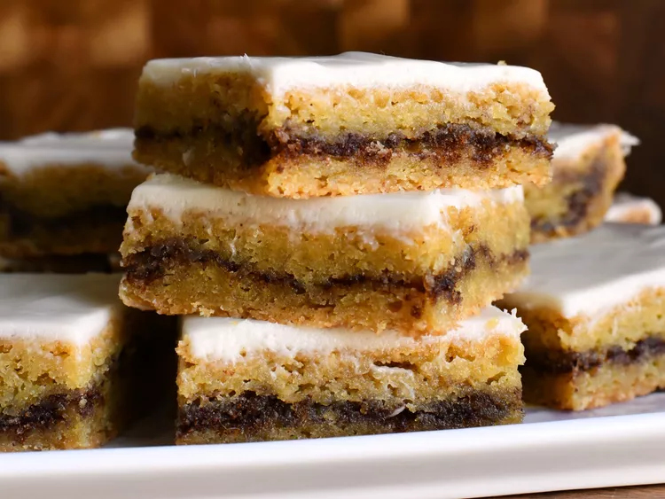

Cinnamon Roll Blondies

Description
These cinnamon roll blondies are everything you love about cinnamon rolls, just in an easy-to-make, chewy, cookie bar form.
Ingredients
Filling
- 1/4 cup light brown sugar
- 1 tablespoon ground cinnamon
Blondies
- 1/2 cup unsalted butter, melted and cooled slightly
- 3/4 cup white sugar
- 1/4 cup light brown sugar
- 2 teaspoons vanilla extract
- 3/4 teaspoon kosher salt
- 1/4 teaspoon ground nutmeg
- 1 large egg, at room temperature
- 1 large egg yolk
- 1 cup all-purpose flour
- 1/4 teaspoon baking soda
Glaze
- 1 ounce full fat cream cheese, at room temperature
- 7 tablespoons confectioner's sugar, or as needed
- 1/4 teaspoon vanilla extract
- 1 pinch salt
- 3 tablespoons heavy cream, or as needed